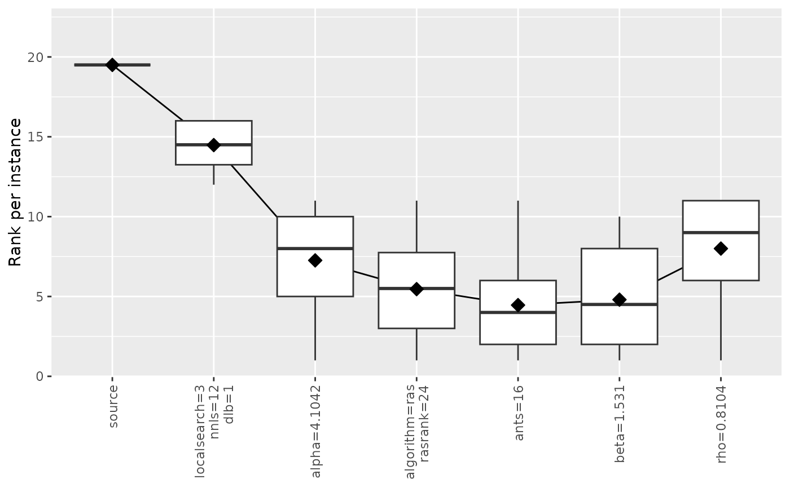
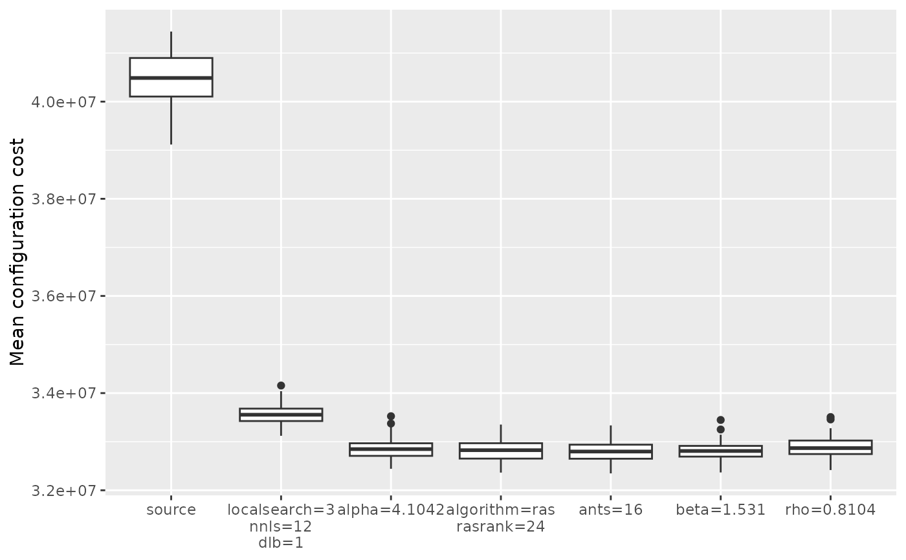
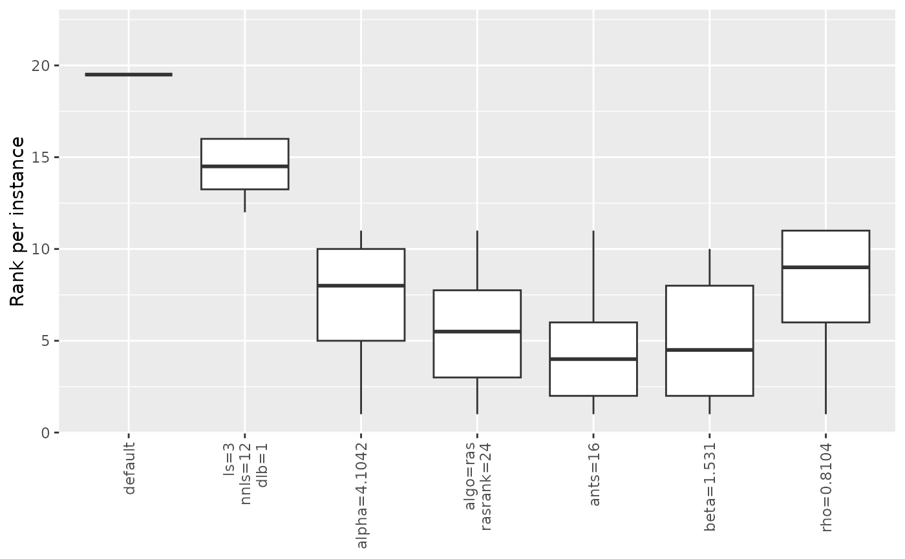
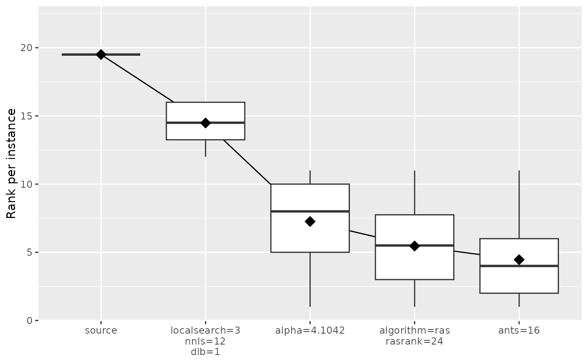
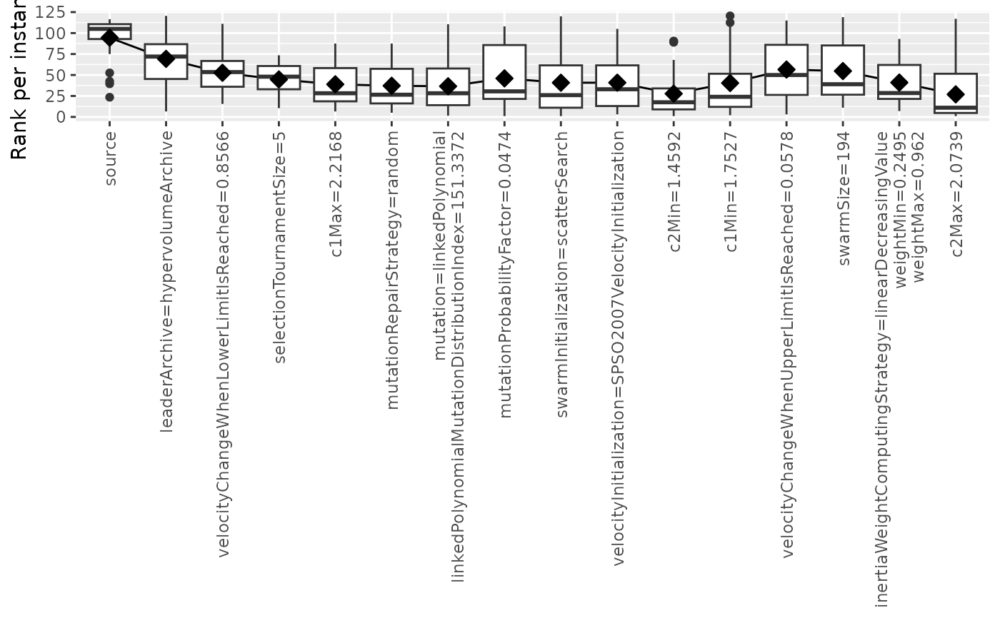

Create plot from an ablation log
ablation_plot(
ablog,
type = c("mean", "boxplot", "rank"),
n = 0L,
ylab = "Mean configuration cost",
ylim = NULL,
rotate_labs = TRUE,
filename = NULL
)(list()|character(1)) Ablation log object returned by irace::ablation(). Alternatively, the path to an .Rdata file, e.g., "log-ablation.Rdata", from which the object will be loaded.
Type of plot. Supported values are "mean" and "boxplot". Adding "rank" will plot rank per instance instead of raw cost value.
(integer(1)) Number of steps included in the plot. By default all steps from source to target are included.
Label of y-axis.
Numeric vector of length 2 giving the y-axis range.
(logical(1)) Whether to rotate labels in x-axis. They are rotated by default because they are typically large.
(character(1)) File name to save the plot, for example "~/path/example/filename.png".
ggplot2::ggplot() boxplot object
ablog <- read_ablogfile(system.file(package="irace", "exdata", "log-ablation.Rdata"))
ablation_plot(ablog)

ablation_plot(ablog, type="boxplot", rotate_labs = FALSE)

ablation_plot(ablog, type="mean,boxplot", rotate_labs = FALSE)

ablation_plot(ablog, type="rank,mean,boxplot", n = 4, rotate_labs = FALSE)

ablog <- system.file(package="iraceplot", "exdata", "log-ablation-autoMOPSODTLZ.Rdata")
ablation_plot(ablog, type="rank,mean,boxplot")
